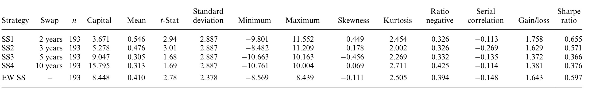
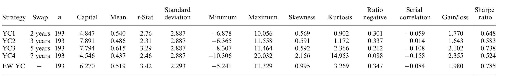
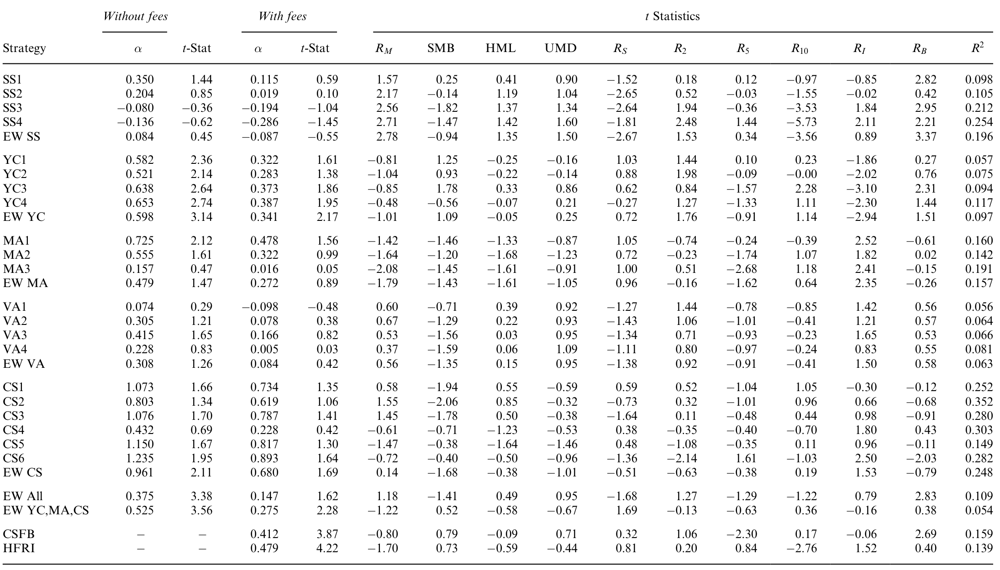
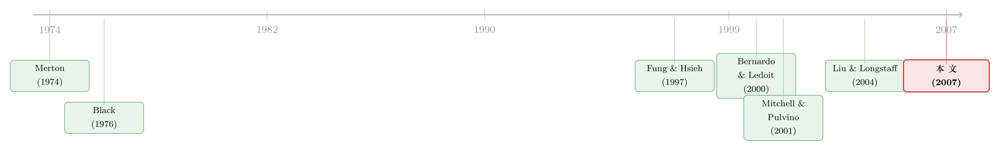

捡硬币的人，真的站在压路机前面吗？
本文读的是 Duarte, Longstaff & Yu (2007, Review of Financial Studies)：作者把五种最主流的固定收益套利策略「复刻」成可计算的收益指数，发现它们不仅不像传言中那样「在压路机前捡硬币」，反而大多呈现正偏；其中越是依赖复杂模型、越「烧脑」的策略，在控制了股债两类系统性风险、交易成本乃至 2/20 的对冲基金费用之后，仍能给出显著为正的 alpha。
1 一句华尔街黑话引出的悬念
固定收益套利 (fixed-income arbitrage) 在华尔街有一个著名的、几乎带着嘲讽意味的外号：picking up nickels in front of a steamroller——在压路机前面捡镍币。意思是，这类策略平时能稳稳地赚一点小钱，但每隔几年，就会被一台缓缓碾来的压路机一次性吞掉所有积蓄，甚至连本带利地碾平。1998 年的对冲基金危机给了所有人一次「亲眼目睹压路机」的机会：从 Long-Term Capital Management (LTCM) 到 Salomon、Goldman、Morgan Stanley，几乎每一家华尔街大行都在固定收益套利上栽了跟头。Lowenstein (2000) 记载，仅互换利差 (swap spread) 这一项，LTCM 在崩溃前就亏掉了 $1.6 billion。
可吊诡的是，被压路机碾过之后，这门生意非但没死，反而越做越大。按 Tremont/TASS (2005) 的统计，2005 一年里投入固定收益套利的资金就增加了超过 $9.0 billion，到年底总规模超过 $56.6 billion——而这还只覆盖了不到一半的对冲基金资本。
于是一个很自然的问题摆在面前：固定收益套利到底是不是真正的「套利」？ 还是说，它本质上等价于不断卖出深度价外的看跌期权 (deep out-of-the-money puts)——平时收着权利金，灾难来时一次还清？如果是后者，那它的收益就该是负偏的：大多数时候小赚，偶尔巨亏。这篇文章要做的，就是把这个传说拿到数据面前，逐一对质。
2 识别策略：把传说「复刻」成可计算的收益指数
要回答上面的问题，最大的障碍其实是数据。对冲基金自己报告的收益，往往是多条策略、不同杠杆混在一起的「大杂烩」，还饱受回填偏差 (backfill bias) 与幸存者偏差 (survivorship bias) 的困扰——亏到关门的基金，根本不会出现在你的样本里。
作者的办法，沿用了 Mitchell and Pulvino (2001) 研究并购套利时的思路：不去看基金报告的收益，而是亲手把策略本身按真实规则跑一遍，逐月生成一条收益指数。这个做法有三个好处：第一，可以把交易成本和杠杆显式地、固定地放进来；第二，能把样本拉到比对冲基金数据长得多的窗口；第三，彻底绕开了回填与幸存者偏差。
具体来说，他们挑了市场上最主流的五种策略：
- 互换利差套利 (swap spread, SS)
- 收益率曲线套利 (yield curve, YC)
- 抵押贷款套利 (mortgage, MA)
- 波动率套利 (volatility, VA)
- 资本结构套利 (capital structure, CS)
为了让五种策略「可比」，作者做了一个关键的标准化处理：调整每种策略的初始投入资本，使其年化波动率恰好等于 10%（即月度 2.887%）。这一步至关重要——它把「杠杆」这个最容易混淆视听的变量摁住了。否则你永远分不清，一个策略亏得惨，到底是策略本身有问题，还是只是杠杆加得太猛。
这正是这篇文章方法论上最聪明的地方：先把杠杆这个自由度锁死，剩下看到的偏度、夏普、alpha，才是策略内在的风险收益特征，而不是某个基金经理一时上头加杠杆的结果。
3 一个最朴素的例子：互换利差里藏着的「隐性违约风险」
五种策略里，互换利差套利最简单，也最能说明问题，我们用它来热身。
这个策略有两条腿。第一条腿：进入一笔平价互换 (par swap)，收取固定的互换利率 CMS，付出浮动的 Libor 利率 L。第二条腿：做空一只同期限的平价国债，把所得投入一个赚取回购利率 r 的保证金账户，同时要付出国债的固定票息 CMT。把两条腿的现金流合并，套利者实际上是收一笔固定年金 SS、付一笔浮动利差 S_t：
策略赚不赚钱，就赌一件事：开仓时锁定的固定利差 SS，会不会大于未来浮动利差 S_t 的平均值。为什么对冲基金敢做这个赌？因为浮动利差 S_t 历史上异常稳定：过去 16 年里它平均只有 26.8 个基点，标准差仅 13.3 个基点。在五年的视野里，它的均值标准差只有区区几个基点，难怪市场常把它当成一个常数。
但这里就埋着压路机。作者一针见血地指出：互换利差套利根本不是教科书意义上的套利，因为套利者承担着一种间接违约风险 (indirect default risk)。一旦市场怀疑某几家大银行的偿付能力，Libor 会急剧飙升——历史上，1974 年石油禁运 (Oil Embargo) 期间，银行 CD 利率与国债利率的利差曾一度冲到近 500 个基点。这时一个付着 Libor 的套利者，会突然承受巨大的负现金流。注意：这里没有任何一家银行真的违约，互换的现金流也不是银行的直接债务——但整个金融体系的恐慌，本身就是那台压路机。
那么数据怎么说？

Table 1: provides summary statistics for the excess returns from the
如表 1 所示，互换利差套利的月度超额收益均值在 0.31% 到 0.55% 之间，全部在 10% 水平显著，两个在 5% 水平显著。更有意思的是偏度：四个期限里有三个是正的（如两年期 SS1 偏度 0.449），只有五年期 SS1 是负的（-0.456）。把四个期限等权组合成 EWSS 后，由于彼此不完全相关，组合波动率只剩个体的 82%，t 值升到 2.78，夏普比率 0.597，Bernardo and Ledoit (2000) 的盈亏比 (gain/loss ratio) 为 1.643。
一个被认为该是负偏的策略，居然大多是正偏——这就是第一处反转。（关于互换利差为什么会偏离常识、甚至在后来转为负值，可参见《互换利差为何敢于「转负」：把套利的风险，算进价格里》。）
4 真正关键的一步：「智力资本」越高，alpha 越真
接着，一个自然的问题是：单看互换利差也许只是个特例？于是作者把同样的逻辑推到了更「烧脑」的策略上。
收益率曲线套利就是典型。它不再是简单地比两个利差，而是假设期限结构由一个双因子仿射模型 (two-factor affine model) 决定，每月把模型精确拟合到一年期和十年期互换利率，再去看其余期限「偏离拟合曲线多远」。如果某个期限偏离超过 10 个基点的触发值，就构造一个蝴蝶组合 (butterfly trade)——比如做多两年期、做空一年期与十年期，使组合对两个因子的敏感度都归零，然后持有 12 个月或直到收敛。识别机会和对冲风险，都离不开一个多因子期限结构模型。用作者的话说，这需要大量的「智力资本」(intellectual capital)。

Table 2: also summarizes that the excess returns are highly positively
结果如表 2：收益率曲线套利的月度超额收益在 0.4% 到 0.6% 之间，全部统计显著，而且高度正偏。五年期 YC3 的均值 0.615%、t 值 3.29、偏度 0.592；七年期 YC4 的偏度更是高达 2.156、峰度 14.953。等权组合 EWYC 的 t 值 3.42、夏普 0.785、盈亏比 1.980——比互换利差还漂亮。正偏的事实，直接反驳了「小赚多次、偶尔巨亏」的压路机叙事。
但真正关键的一步，在于风险调整。光有正收益不够，得问：这些超额收益，是不是只是承担了股市、债市系统性风险的补偿？作者用股债两类风险因子（沿用 Fama and French (1993) 的思路并加入债券因子）对各策略收益做回归，看截距项 alpha 是否还显著。

Table 6: reports that at least two of the four individual strategies have
答案构成了全文的核心反转：互换利差 (SS) 和波动率 (VA) 套利的 alpha 不显著——它们的收益基本能被市场风险解释掉；而收益率曲线 (YC)、抵押贷款 (MA)、资本结构 (CS) 套利，却给出了显著为正的 alpha。规律惊人地清晰：
能产生显著 alpha 的，恰恰是那三种最需要「智力资本」、最依赖复杂模型来识别机会和对冲风险的策略。 简单到「比两个利差」的策略，赚的只是风险补偿；复杂到需要仿射模型、需要刻画 MBS 负凸性的策略，才赚到了真正属于「技艺」的钱。
这是一个相当反直觉、也相当令人安心的结论：固定收益套利的超额收益，不是随便谁加杠杆都能捡的镍币，而是有门槛的——门槛就是模型能力本身。
5 抵押贷款套利：这一次，压路机是真的
当然，作者没有粉饰太平。抵押贷款套利里，压路机的影子是实实在在的。
MBS 过手证券 (passthrough) 的核心风险是提前偿还风险 (prepayment risk)：利率下行时，房主会争相再融资、提前还款，于是 MBS 的价格在利率下降时涨不上去——这就是所谓的负凸性 (negative convexity)。一个用互换对冲了久期的 MBS 组合，会继承这种负凸性：利率无论朝哪个方向剧烈变动，组合都会受伤。这在收益分布上，确实会表现出类似「卖出期权」的特征。
换句话说，五种策略并非铁板一块：有的（如 SS、VA）赚的是风险补偿，有的（如 MA）确实带着空头凸性的味道，而有的（如 YC、CS）则更像真正的「技艺租金」。把它们一锅烩成「固定收益套利」，本身就是这门生意被长期误解的根源之一。
6 费用这台「内部压路机」
还没完。投资者拿到手的，是扣费之后的收益。作者于是把 2/20 的对冲基金费用（2% 管理费 + 高于 Libor 高水位线部分的 20% 提成）也减掉，再看一遍。
结论是双面的：费用确实会削弱甚至抹平单个策略的 alpha 显著性；但如果把那些「智力密集型」策略等权组合起来，分散化带来的好处使得组合在扣费后仍保有显著的 alpha。不过作者也诚实地承认——相对于这些策略能产生的 alpha 而言，固定收益套利行业的费用是「偏高」的。换句话说，真正的压路机，也许不在市场里，而在你支付的费率单上。
7 文献脉络
这条研究的根，扎在两片土壤里。
一片是衍生品定价与信用风险的理论。Merton (1974) 用期权思想给公司债定价，奠定了后来资本结构套利的理论基础；Black (1976) 的商品期权定价、以及由此延伸出的波动率建模，支撑起波动率套利；Duffie and Singleton (1997) 对互换期限结构的刻画，则是互换利差与收益率曲线套利背后的引擎。这些工作回答的是「价格应该是多少」。
另一片，是对冲基金收益的实证刻画。Fung and Hsieh (1997, 2001, 2002) 反复指出，许多对冲基金策略的收益带有期权式 (option-like) 的非线性特征——这正是「压路机」叙事的学术版本。而把「跟踪策略本身、生成收益指数」这一方法论真正立起来的，是 Mitchell and Pulvino (2001) 对并购套利的研究，以及 Mitchell, Pulvino, and Stafford (2002)。本文几乎是把他们的方法从股票套利平移到了固定收益领域。

衡量「这收益到底好不好」，作者借了 Bernardo and Ledoit (2000) 的盈亏比这把尺子；而对「为什么套利者明明看到机会却还会亏钱」这一深层问题，则呼应了 Liu and Longstaff (2004) 关于「在存在套利机会的市场中如何最优配置」的洞见。本文恰好坐在这三条线的交汇处：用 Mitchell-Pulvino 的方法、Bernardo-Ledoit 的尺子，去检验 Fung-Hsieh 提出的「期权式收益」假说在固定收益领域是否成立——而答案是：大体上，不成立。
（关于资本结构套利赖以成立的「股票与信用市场是否同步」，可参见《同一家公司，股票和它的「违约保单」，真的在同一条船上吗？》；关于「无风险的钱为什么没人捡」这一套利极限问题，可参见《无风险的钱，为什么没人捡？——把「套利者」从原子变成博弈玩家》。）
8 评论与延伸（Q&A + 研究方向）
(a) 几个可能的疑问
Q：收益是正偏的，是不是就说明这些策略没有尾部风险？
不能这么推。正偏只是说「大的正收益比大的负收益更常见」，并不排除某一次极端的负冲击。作者自己也强调，多个策略对金融市场的「事件风险 (event risk)」有共同的敏感性；他们论证这些 alpha 不只是对一个尚未实现的「peso 事件」的补偿，但这本身就承认了那种风险的存在。MA 策略的负凸性更是直接的尾部来源。
Q：把波动率标准化到 10% 会不会「洗掉」了真实的风险差异？
标准化的是事前的波动率口径，目的是剔除杠杆这个混淆变量，让不同策略可比。它并不会改变收益分布的形状——偏度、峰度、最大回撤这些高阶矩照样保留。所以策略内在的尾部特征仍然看得见，被固定住的只是「加了多少杠杆」这一个维度。
Q：策略里用到了全样本估计的模型参数，会不会有前视偏差 (look-ahead bias)？
作者对此相当谨慎。以收益率曲线策略为例，模型每期只用当期的一年、十年互换利率来定状态变量，因此状态变量没有前视；参数虽在全样本估计，但只用于决定对冲比率。作为稳健性检验，他们还用前半段样本估参数、后半段做策略，结果几乎一致。这削弱了前视偏差的担忧，但没法 100% 消除。
Q：为什么互换利差套利的 alpha 反而不显著？它不是最经典的策略吗？
恰恰因为它太简单。它的收益主要是对「金融体系事件风险」这一系统性因子的补偿——一旦把这类风险因子放进回归，截距就所剩无几。经典、流行，不等于能产生真正的超额收益；越是不需要模型的策略，越容易被风险因子解释掉。
Q：这与并购套利 (merger arbitrage) 的结论矛盾吗？
不矛盾，而是对照。Mitchell and Pulvino (2001) 发现并购套利的收益是负偏的，像卖保险。本文发现多数固定收益套利却是正偏。这恰恰说明「套利」不是一个同质的标签——不同套利的风险结构可以截然相反，不能用一套「卖期权」的直觉一概而论。
Q：扣费后组合还有 alpha，是不是说散户也能照着做？
不行。这些 alpha 来自「智力资本」——多因子期限结构模型、MBS 提前偿还模型、结构化信用模型，以及执行这些策略所需的交易台与融资能力。论文衡量的是策略本身的可得收益，不是任何人都能复制的免费午餐。
(b) 几个可能的研究问题与提案
1. 把样本延长到 2008 与 2020：压路机真的来了吗？
【经济故事】本文样本止于 2004 年 12 月，恰好错过了 2008 全球金融危机和 2020 年 3 月的「冲刺现金」。如果说固定收益套利收益正偏是因为「灾难尚未实现」，那这两次正是检验。重做这条收益指数，能直接看到正偏是否在危机中翻转为负偏。 【可行性】高。互换、国债、回购、MBS、CDS 数据如今都更易获得，方法论完全可照搬，唯一的工作量在复刻五条策略。
2. 外资持有人撤离与固定收益套利收益的关系。
【经济故事】互换利差、国债相关套利高度依赖回购与做市能力，而美国国债与公司债市场的边际定价者中，外资占比举足轻重。当外资在压力期集中撤离，套利者的融资约束会收紧，收益分布的左尾应当变厚。 【可行性】中。需要 TIC 或托管层面的外资持有数据与套利收益指数对齐，识别上可借危机或货币政策冲击作为外资流动的外生变化，但精确归因到「套利收益」需要细致的工具变量。
3. 公司债流动性与资本结构套利 alpha 的来源分解。
【经济故事】CS 套利的 alpha 究竟是「模型技艺」还是「承担了公司债流动性风险」？把 CS 收益对公司债流动性因子（如成交价冲击、买卖价差）回归，可以把那部分被误读为 alpha 的流动性补偿剥离出来。 【可行性】高。TRACE 提供逐笔成交，流动性度量成熟（可参见《把「成交价」从「成交量」里解放出来——重新丈量公司债的流动性》），CS 收益指数可按本文方法构造。
4. 「智力资本」能否被量化为一个定价因子？
【经济故事】本文给出了一个诱人的定性规律：模型复杂度越高，alpha 越真。能否构造一个跨策略的「模型复杂度」代理（如所需状态变量数、对冲腿数），检验它在横截面上是否解释 alpha 的大小？ 【可行性】中。难点在于「复杂度」的客观度量与样本量——可行策略数量有限，统计功效是真实约束，更适合作为描述性证据而非严格因果。
9 我的判断
这篇文章的贡献是双重的。方法上，它把 Mitchell-Pulvino 式的「复刻策略、固定杠杆」做法干净地搬进了固定收益领域，给出了一组无回填、无幸存者偏差、杠杆可比的收益指数——这本身就是一份可以被后人反复使用的公共品。结论上，它用「正偏 + 智力资本越高 alpha 越真」这一对发现，相当有力地反驳了「固定收益套利=在压路机前捡硬币」的流行叙事，并把超额收益的来源指向了模型能力而非单纯的风险承担。
但我对识别有两点保留。其一是样本期：1988–2004 这段窗口，虽然包含了 1998 危机，却整体处于一个利率与利差相对温和的时代；正偏的结论高度依赖于「大灾难恰好没在样本里反复出现」，这与 Fung-Hsieh 的 peso 担忧是同一个硬币的两面，作者的反驳更多是论证性的而非可证伪的。其二是 alpha 的归属：把超额收益归因于「智力资本」很有吸引力，但 YC、MA、CS 这三种「复杂」策略，恰恰也是最暴露于流动性风险和事件风险的策略——复杂度与隐性风险敞口高度共线，区分「技艺租金」与「未被因子捕捉的尾部补偿」并不容易。
我最想看到的后续，是把这套收益指数延长到 2008 与 2020，并用更细的流动性因子去拆 CS、MA 的 alpha。如果正偏在两次真正的危机里翻转，而 alpha 在控制流动性后大幅缩水，那么「压路机」这个比喻或许并没有被推翻，只是被推迟了。
参考文献
Bernardo, A., and O. Ledoit (2000). Gain, Loss, and Asset Pricing. Journal of Political Economy 108(1), 144–172.
Black, F. (1976). The Pricing of Commodity Contracts. Journal of Financial Economics 3(1–2), 167–179.
Duffie, D., and K. Singleton (1997). An Econometric Model of the Term Structure of Interest Rate Swap Yields. Journal of Finance 52(4), 1287–1323.
Fama, E., and K. French (1993). Common Risk Factors in the Returns on Stocks and Bonds. Journal of Financial Economics 33(1), 3–56.
Fung, W., and D. Hsieh (1997). Empirical Characteristics of Dynamic Trading Strategies: The Case of Hedge Funds. Review of Financial Studies 10(2), 275–302.
Fung, W., and D. Hsieh (2001). The Risk in Hedge Fund Strategies: Theory and Evidence from Trend Followers. Review of Financial Studies 14(2), 313–341.
Liu, J., and F. Longstaff (2004). Losing Money on Arbitrage: Optimal Dynamic Portfolio Choice in Markets with Arbitrage Opportunities. Review of Financial Studies 17(3), 611–641.
Lowenstein, R. (2000). When Genius Failed: The Rise and Fall of Long-Term Capital Management. Random House, New York, NY.
Merton, R. (1974). On the Pricing of Corporate Debt: The Risk Structure of Interest Rates. Journal of Finance 29(2), 449–470.
Mitchell, M., and T. Pulvino (2001). Characteristics of Risk and Return in Risk Arbitrage. Journal of Finance 56(6), 2135–2175.
Mitchell, M., T. Pulvino, and E. Stafford (2002). Limited Arbitrage in Equity Markets. Journal of Finance 57(2), 551–584.